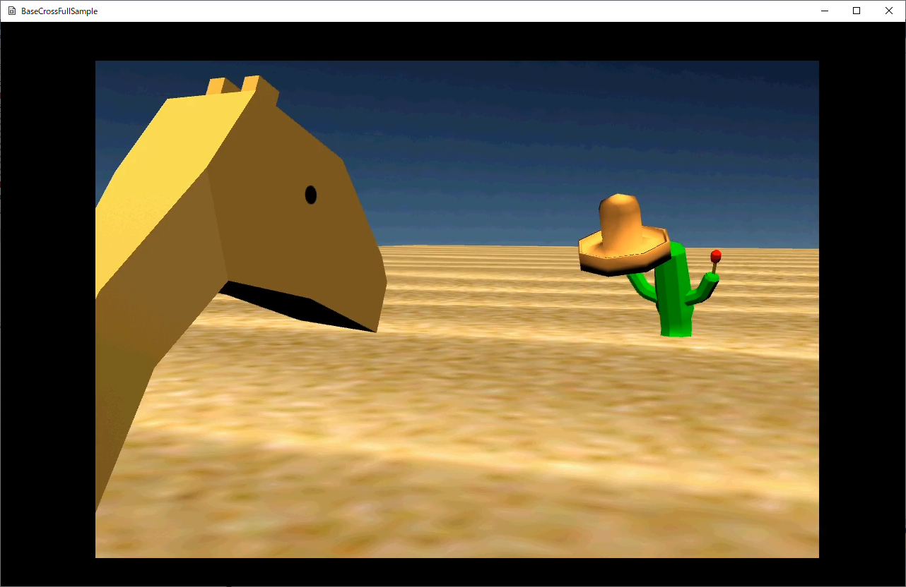
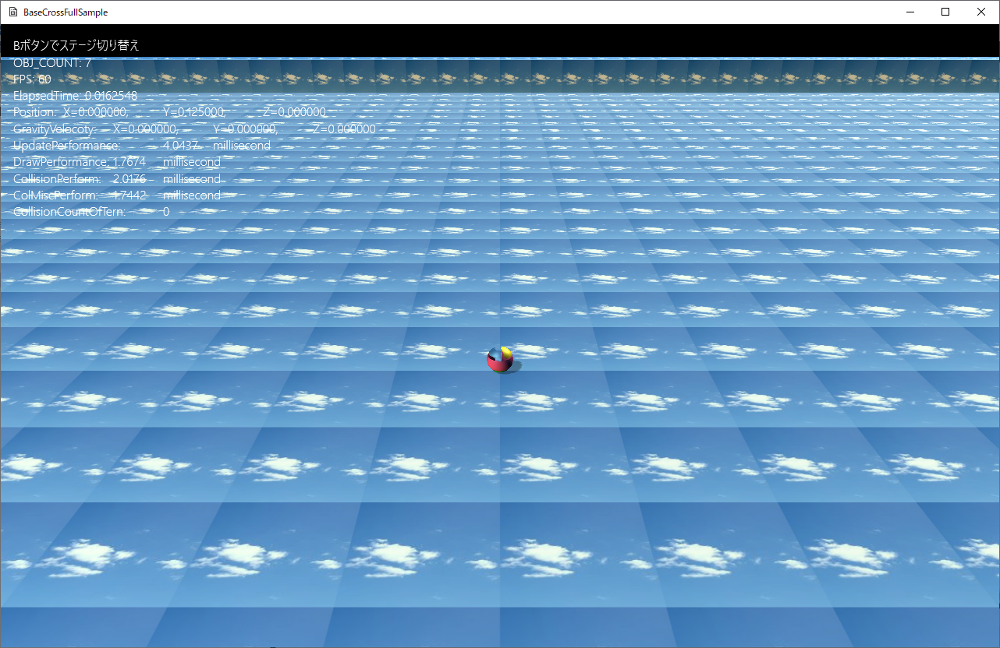

図1107a
ここでBボタンを押すとステージが切り替わり、ゲームステージが表示されます。

図1107b
ゲームステージでもBボタンを押すと、動画ステージになります。
//--------------------------------------------------------------------------------------
// ムービーステージクラス
//--------------------------------------------------------------------------------------
class MyMovieStage : public MovieStage {
//入力ハンドラー
InputHandler<MyMovieStage> m_InputHandler;
public:
//構築と破棄
MyMovieStage() :MovieStage() {}
virtual ~MyMovieStage() {}
//初期化
virtual void OnCreate()override;
virtual void OnUpdate() override;
//Aボタン
void OnPushA();
//Bボタン
void OnPushB();
};
void MyMovieStage::OnCreate() {
MovieStage::OnCreate();
wstring dataDir;
//サンプルのためアセットディレクトリを取得
App::GetApp()->GetAssetsDirectory(dataDir);
wstring strMovie = dataDir + L"testMovie.mp4";
SetMovieFileName(strMovie);
//再生
Play();
}
//Bボタン
void MyMovieStage::OnPushB() {
//ゲームステージに移行
PostEvent(0.0f, GetThis<ObjectInterface>(),
App::GetApp()->GetScene<Scene>(), L"ToGameStage");
}